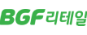

in Story & News
회원사
Headline
베올리아 코리아

창립 25주년 맞이
10월 17일 창립 25주년을 맞이한 베올리아 코리아는 고객사의 ESG 파트너로서 탈탄소화, 오염 제거와 자원 재생을 위한 지속 가능한 솔루션을 지원하고 있다. 1853년 프랑스에서 설립된 베올리아는 1999년 한국 진출 이래 1조원 이상 물-폐기물-에너지 분야에 투자해 현재 50곳 이상의 사업장에서 1,200명의 임직원이 근무하는 기업이다. 베올리아 코리아는 글로벌 생태 전환 및 자원 관리의 선두 기업으로서 국내 유수의 기업과 지자체 고객에 산업용수 서비스, 하폐수 처리, 폐기물 관리, 에너지 분야에서 맞춤형 환경 솔루션을 제공하고 있다.
SPC그룹
한국 기업 중 유일하게 프랑스 대통령 초청 만찬 참석
SPC그룹 허진수 사장이 에마뉘엘 마크롱(Emmanuel Macron) 프랑스 대통령이 주최한 만찬에 초청받아 참석했다. 10월 21일 프랑스 파리에서 열린 국제 식품무역박람회 SIAL 60주년 기념 만찬에 한국 기업인으로는 유일하게 초대된 것이다. 이는 SPC그룹이 파리바게뜨를 통해 글로벌 시장에서 활약하며, 한-프랑스 간 경제와 음식 문화 교류에 기여한 점을 인정받은 결과다. SPC그룹 허영인 회장과 허진수 사장은 세계 각국의 식품박람회에 직접 참석하며, 글로벌 식품 산업 트렌드를 파악하고 신규 원료를 도입하는 등 적극적인 현장경영 활동을 펼치고 있다. 이번 에마뉘엘 마크롱 프랑스 대통령 만찬 참석으로 SPC그룹의 글로벌 사업 확장은 더욱 탄력을 받을 것으로 기대된다.
모히건 인스파이어

첸 시 사장, ‘2024 외국인투자유치 유공자’로 선정
11월 5일 모히건 인스파이어 엔터테인먼트 리조트의 첸 시(Chen Si) 사장이 산업통상자원부 주최, 한국외국기업협회 주관의 ‘2024 외국 기업의 날’ 행사에서 외국인투자유치 유공자로 선정돼 산업포장을 수상했다. ‘외국 기업의 날’은 외국인직접투자(FDI)를 통해 대한민국 경제에 기여한 기업·기관·유공자를 치하·격려하기 위한 행사로 2001년부터 매년 개최되고 있다. 첸 시 사장은 모히건 인스파이어의 대표로서 관광·레저 분야 최대 규모의 외국인직접투자 유치를 성공적으로 이끌며 국내 관광산업에 긍정적 영향을 미친 공로를 인정받아 산업포장 수상의 영예를 안았다. 인스파이어는 약 7억달러에 이르는 외국인 투자를 포함해 약 2조원 규모의 리조트를 영종도에 성공적으로 개장하며 국내 관광산업 발전에 기여하고 있다.
현대모비스
‘CEO 인베스터 데이’에서 밸류업 방향 제시
현대모비스는 11월 19일 투자자, 애널리스트, 신용평가사 담당자 등을 대상으로 ‘2024 CEO 인베스터 데이’(CEO Investor Day)를 개최했다. 행사는 현대모비스 대표이사인 이규석 사장이 전사 중장기 성장 방향성과 제반 전략을 직접 공개하고, 글로벌 영업과 ESG 등 각 부문 전략 달성을 위한 구체적인 실행 방안을 설명하는 형식으로 진행됐다. 현대모비스는 글로벌 선도기술 경쟁력을 바탕으로 수익성 중심 사업체질 개선에 나선다. 2027년까지 매출은 연평균 8% 성장을 이어가고, 영업이익률은 5~6% 달성하겠다는 목표다. 특히 2033년까지 부품제조 부문 글로벌 완성차 고객 비중을 40%로 끌어올리고, 총주주환원율(TSR)을 30% 이상 달성하는 등 적극적인 주주환원정책도 균형 있게 추진하기로 했다.
유한양행
유한양행, 국산 항암제 최초 미국 진출
유한양행의 신약 ‘렉라자’가 2024년 국산 항암제 중 최초로 미국 진출에 성공했다. 렉라자는 비소세포폐암 치료제로 2021년 국산 31호 신약으로 국내에 첫선을 보였고, 미국에서는 글로벌 제약사 ‘얀센’의 리브리반트 약제와 병용 요법으로 2024년 8월 FDA 허가를 획득했다. 유한양행은 렉라자 1차 치료제의 보험 급여 적용 이전인 2023년 하반기 약 6개월간 폐암 환자들에게 렉라자를 무상으로 조기 공급했다. 해당 기간에 900여 명의 환자가 렉라자를 제공받았으며, 이는 약 300억원 규모로 추산된다.
한편 2026년 창업 100주년을 맞이하는 유한양행은 ‘글로벌 Top 50 제약사’ 목표 아래 지속적인 연구개발(R&D)을 진행하고 있으며, 이를 기반으로 글로벌 빅 파마로 발돋움한다는 계획이다.
2024 주요 기업의 사회적 가치 보고서 속
환경 분야 사회공헌 프로젝트
2023년 신규 론칭된 사회공헌 프로젝트 142개(125개사)를 분석한 결과, ‘환경’ 대상 프로그램이 23.9%로 가장 많았다. 국제적으로 ESG 중 환경 관련 제도화가 가장 빠르게 진행되면서 글로벌 ESG 강화 기조에 대응할 필요성이 커지고 있다. 이에 많은 기업이 온실가스 감축과 관리, 순환 경제, 친환경 기술 투자와 상품 개발에 적극적으로 대응한 것으로 분석된다.

『2024 주요 기업의 사회적 가치 보고서』
한국경제인협회가 1993년부터 발간해온 『주요 기업 및 기업재단 사회공헌백서』의 기업 부문 조사에 UN SDGs 연계성 분석, 주요 기업의 사회적 가치 창출 현황 등을 추가해 발간됐다.
BGF리테일

반려해변 정화 활동 ‘SAFE FOOD, SAVE EARTH’
목적: 해양 환경 정화 활동 및 구성원 환경 교육 전개
내용: 경기 화성시 궁평리 해수욕장을 입양해 임직원, 중소협력사 대상으로 반려해변 정화 활동 연간 시행
➊해양 생태계 보전 활동 전개 및 참여
➋임직원, 가맹점주 대상 환경 교육으로 일상 속 친환경 실천 활동 독려
➌본사 임직원, 중소협력사 임직원 등 약 110명이 참여해 해양 쓰레기 93kg 수거
SK이노베이션

스타트업, 사회적기업 등 ESG 경영 지원
목적: 회사의 ESG 노하우와 환경영향평가 기술을 활용해 스타트업 ESG 경영 지원
내용: SK이노베이션 환경과학기술원의 전문화된 역량을 활용해 사회적기업, 소셜벤처 등 스타트업의 환경가치 창출과 ESG 경영 지원
➊환경전과정평가(Life Cycle Assessment, LCA) 수행을 통해 환경개선 목적의 데이터 관리에 도움
➋소셜벤처의 환경 정보 신뢰도 향상
➌새로운 사업 기회 창출에 기여
효성그룹
‘효성 바다숲 조성 사업’
목적: 기후변화 대응 및 해양오염 문제에 대한 바다 환경 보호
내용: 완도 해역 바다숲 조성 사업에 참여
➊효성그룹 5개사(효성, 효성티앤씨, HS효성첨단소재, 효성중공업, 효성화학) 대표 직원들이 해초류 잘피 이식용 모판 만들기 작업을 직접 체험, 2천주의 잘피 이식
➋한국수산자원공단 남해본부와 협업, 2027년까지 4년간 총 13억원(국비 50%, 효성그룹 50%)을 투자하는 바다숲 조성으로 기후변화에 대응한 블루카본 자원 확보 등 선도적 역할 수행 계획
종근당

‘아름다운 옷장’ 캠페인
목적: 기후취약계층의 건강한 여름나기 지원
내용: 임직원 의류 나눔 프로그램으로 하절기 의류를 쪽방촌 주민에 기증
➊사용하지 않는 하절기 의류를 쪽방촌 주민에 기증
➋폭염 대비 이온음료 약 500개 지원
➌재활용, 재이용 등으로 자원 보호와 선순환 경제에 기여
KCC글라스

‘구해조(鳥) KCC글라스’ 야생조류 보호 캠페인
목적: 야생조류의 소중함과 조류친화 건축물에 대한 관심 제고
내용: 야생조류 보호를 위한 생물다양성 보전 캠페인
➊숲과 가까이에 위치해 야생조류의 충돌이 빈번할 것으로 예상되는 건축물 선정
➋KCC글라스 임직원 등 약 50명이 외부 유리에 조류충돌방지스티커 부착, ‘구해조(鳥) KCC글라스 조류친화건축물’로 인증
➌국립생태원과 함께 야생조류 충돌 현황 조사